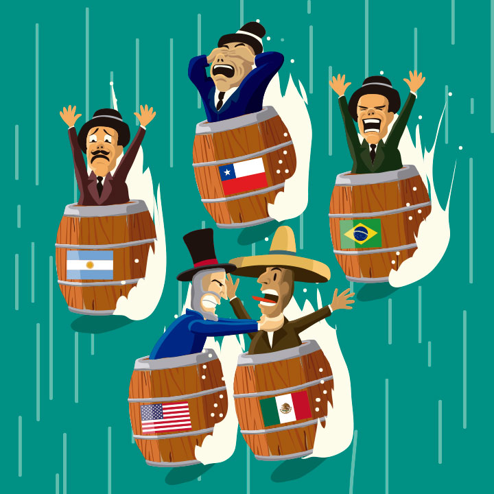
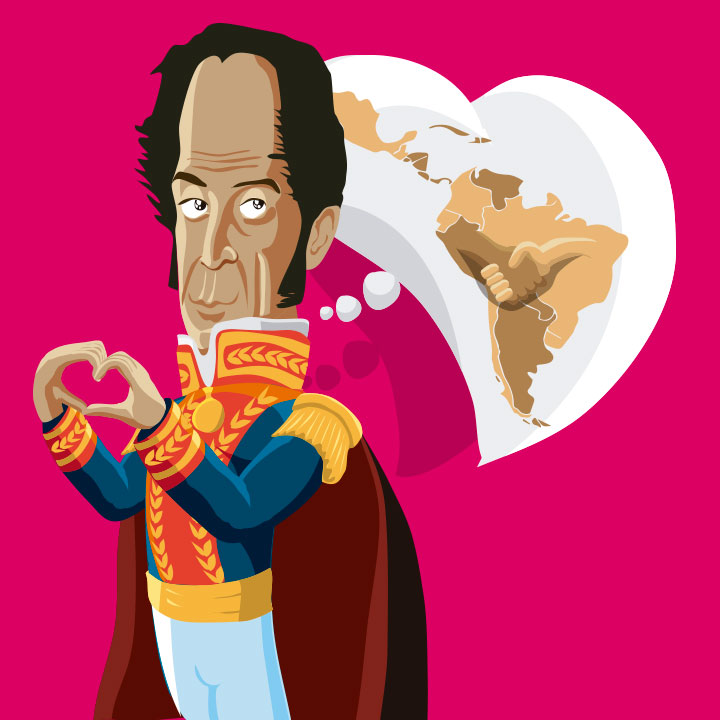
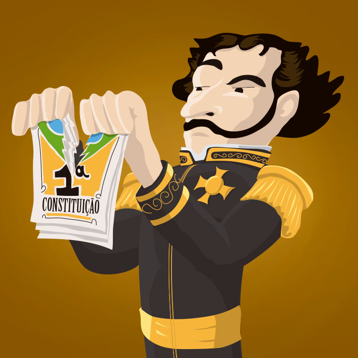
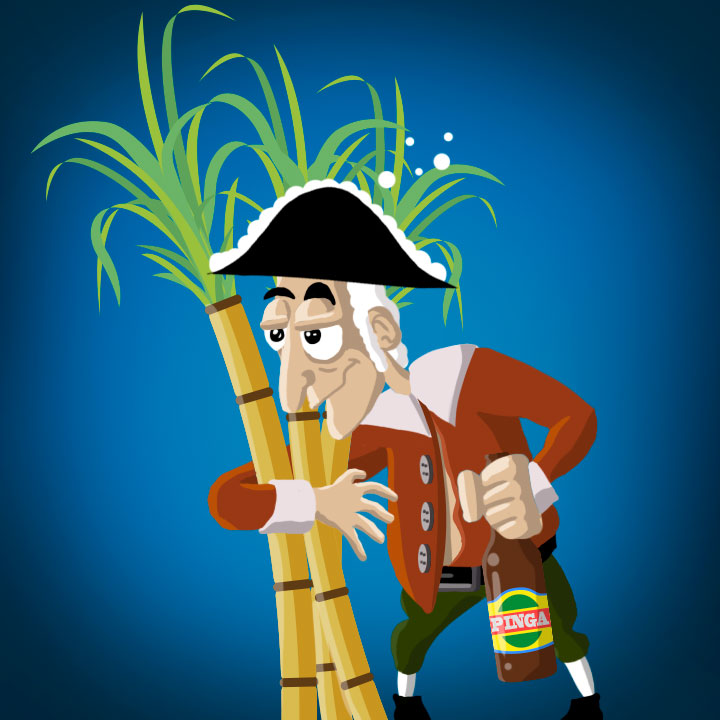
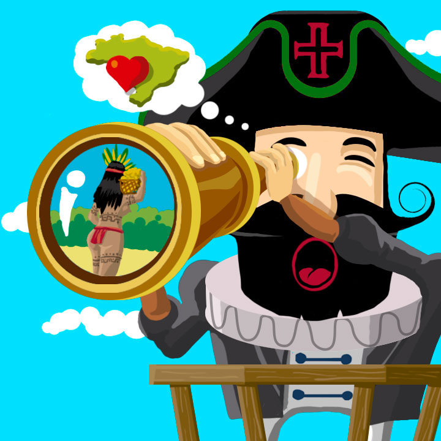
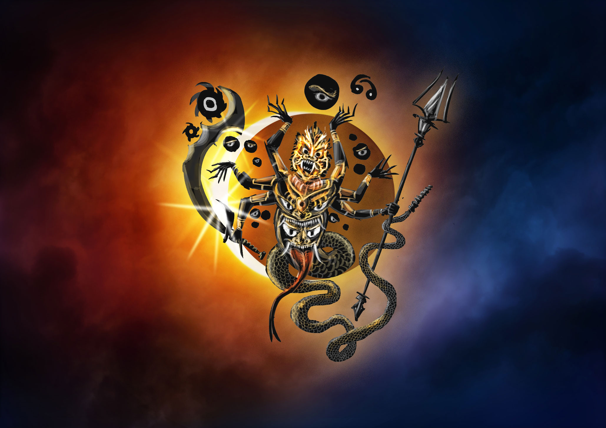
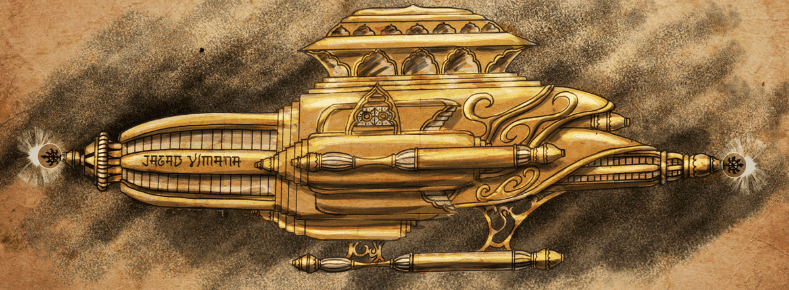
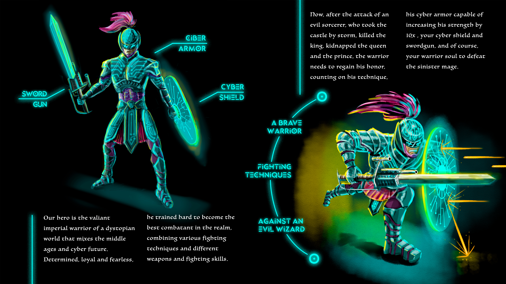
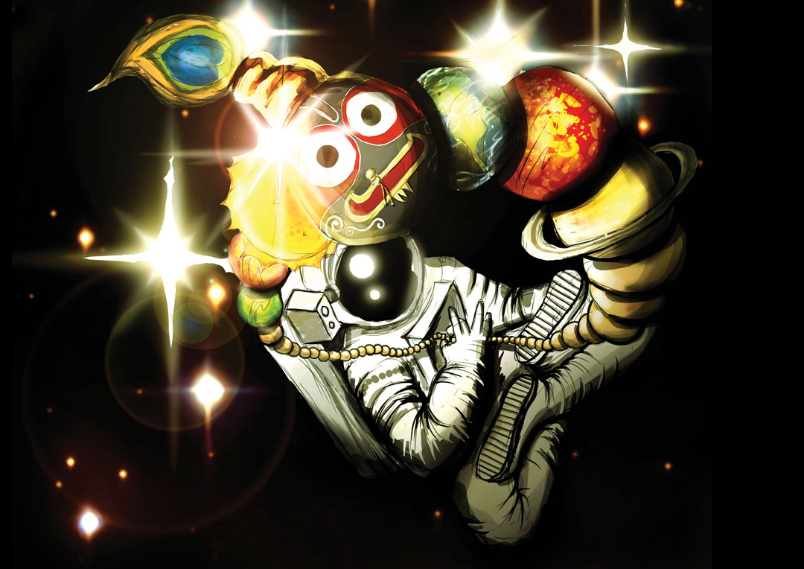

MEMÓRIA &
mitologia védica
Bem-vindo à ala reservada de ilustrações. Abaixo, as obras estão dispostas sob iluminação direcionada. A coleção se divide entre as ilustrações históricas para o jogo Minemósine e estudos conceituais sobre a antiga engenharia cósmica e divindades védicas.
Sala I: O Jogo Minemósine
Ilustrações Editoriais e Didáticas de Resgate Histórico

América Latina sob Tormenta
Técnica: Vetor e Pintura Digital Editorial.
Ano de Produção: 2024.
Contexto: Carta de evento representando a instabilidade sociopolítica das repúblicas latino-americanas em barris de pólvora durante as tormentas do início do Século XX.

O Sonho de Bolívar (Pátria Grande)
Técnica: Arte Vetorial Limpa.
Ano de Produção: 2024.
Contexto: Retrato de Simón Bolívar e o símbolo da integração latino-americana idealizado no Congresso do Panamá em 1826.

Outorga da Constituição de 1823
Técnica: Ilustração Didática Vetorial.
Ano de Produção: 2024.
Contexto: Dom Pedro I rasgando o projeto constitucional da Assembleia Constituinte, antecedendo a outorga imperial absolutista de 1824.

Luneta e Território: O Olhar Colonizador
Técnica: Vetor Flat de Alto Impacto.
Ano de Produção: 2024.
Contexto: Representação crítica do olhar europeu de apropriação sobre o corpo indígena e os limites da terra de exploração no Brasil do século XVI.

Cana, Destilados e Economia Colonial
Técnica: Ilustração Didático-Sátira.
Ano de Produção: 2024.
Contexto: A relação intrínseca do plantio da cana-de-açúcar, a produção da cachaça e sua influência psicossocial e econômica na formação mercantilista do Brasil.
Sala II: Cosmologia & Mitologia Védica
Concept Art, Engenharia Cósmica Antiga e Divindades

Rahu: O Devorador Cósmico do Eclipse
Técnica: Pintura Digital de Altura de Contraste.
Ano de Produção: 2025.
Contexto: Representação conceitual do demônio Rahu, a cabeça asurada que persegue o Sol e a Lua no céu, gerando os eclipses cíclicos da cosmologia védica antiga.

Jagad Vimana: O Carro Voador Antigo
Técnica: Pintura de Textura e Ouro Orgânico.
Ano de Produção: 2025.
Contexto: Estudo conceitual e diagramação livre da espaçonave Jagad Vimana descrita nos textos antigos hindus do Vaimanika Shastra.

Vardhan: O Guardião de Raio
Técnica: Character Concept Design / Tinta Digital.
Ano de Produção: 2025.
Contexto: Guerreiro sagrado de armadura de ouro dotado de uma lança de arco voltaico de plasma e raios purificadores.

Os Reinos Elevados de Vimana
Técnica: Pintura Matte Digital / Cenários de RPG.
Ano de Produção: 2025.
Contexto: Visão panorâmica de ilhas flutuantes sagradas, templos suspensos por magnetismo e guardiões de lâmina dupla em eterna vigília cósmica.

Dystopian Cyber Knight
Técnica: Guia Conceitual de Jogo.
Ano de Produção: 2023.
Contexto: Protótipo de design de personagem fundindo elementos medievais e cibernéticos para um universo futurista distópico.

Imponderabilidade Cósmica
Técnica: Pintura Digital Figurativa Complexa.
Ano de Produção: 2024.
Contexto: Um astronauta imerso no fluxo circular do tempo, orbitando templos e deidades em suspensão absoluta, representando a união da exploração espacial com a espiritualidade.
Fim do Roteiro de Exposição
SAIR DA GALERIA